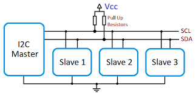
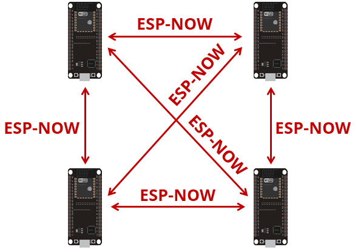

Fab Academy Communications ARDUINO IDE
XIAO ESP32C6 with Arduino IDE
This sheet is a simplified communications reference for students working with the Seeed Studio XIAO ESP32C6 in Arduino IDE. It is organized as a template you can modify for your own projects. Each section includes:
- what the communication method is for
- what hardware or software you need
- the main steps in the code
- a fully commented example
- suggestions for changing the example into your own project
The order in this sheet is:
- I2C between boards
- Wi-Fi HTTP
- Wi-Fi MQTT
- ESP-NOW
- BLE
- Zigbee
1. Before you start
Board and IDE setup
Before trying any example:
- Install Arduino IDE 2.x.
- Install the ESP32 boards package from Espressif in the Arduino Boards Manager.
- Select the board XIAO_ESP32C6.
- Select the correct USB port.
- Open the Serial Monitor and set it to 115200 baud unless the sketch says otherwise.
Useful defaults for the XIAO ESP32C6
For these examples, the default I2C pins are:
- SDA = GPIO 22
- SCL = GPIO 23
In the XIAO pin labels, these are usually:
- D4 = SDA
- D5 = SCL
The built-in LED is available as:
- LED_BUILTIN
General notes for all communications examples
- Use 3.3 V logic only.
- If two boards communicate by wire, connect GND to GND.
- If you use I2C, the bus needs pull-up resistors on SDA and SCL. Many modules already include them, but two bare boards usually need external pull-ups such as 4.7 kOhm to 3.3 V.
- For Wi-Fi on ESP32 boards, use 2.4 GHz networks.
- Read the Serial Monitor output first when debugging.
2. I2C between boards

What this example does
In this example, one XIAO ESP32C6 works as an I2C master and another works as an I2C slave.
- The master sends a short text message.
- The slave receives that message.
- The master then requests a response from the slave.
- The slave sends a short response back.
This is a good template when you want one board to ask another board for data or commands over two wires.
What you need
- 2 XIAO ESP32C6 boards
- jumper wires
- pull-up resistors on SDA and SCL if your hardware does not already provide them
Wiring
Connect the two boards like this:
- Master D4 (SDA) to Slave D4 (SDA)
- Master D5 (SCL) to Slave D5 (SCL)
- Master GND to Slave GND
- 4.7 kOhm pull-up from SDA to 3.3 V
- 4.7 kOhm pull-up from SCL to 3.3 V
Main code steps
Master
- Include
Wire.h. - Start I2C with
Wire.begin(SDA_PIN, SCL_PIN, frequency). - Send data with
Wire.beginTransmission(address)andWire.write(...). - Finish the transmission with
Wire.endTransmission(). - Ask the slave for data with
Wire.requestFrom(...). - Read the answer with
Wire.read().
Slave
- Include
Wire.h. - Create a receive callback with
Wire.onReceive(...). - Create a request callback with
Wire.onRequest(...). - Start slave mode with
Wire.begin(address, SDA_PIN, SCL_PIN, frequency). - Store received data in a variable.
- Return data when the master requests it.
I2C master code
#include <Arduino.h>
#include <Wire.h>
// ============================================================
// BOARD SELECTION — uncomment ONE of the following lines:
// ============================================================
//#define BOARD_XIAO_ESP32C6
#define BOARD_XIAO_RP2350
// ============================================================
// Pin and init configuration per board.
#ifdef BOARD_XIAO_ESP32C6
const int SDA_PIN = 22;
const int SCL_PIN = 23;
#elif defined(BOARD_XIAO_RP2350)
const int SDA_PIN = 6;
const int SCL_PIN = 7;
#else
#error "No board selected. Uncomment one of the BOARD_ defines above."
#endif
// Define the slave address.
const uint8_t I2C_ADDRESS = 0x55;
// Define the bus frequency.
const uint32_t I2C_FREQUENCY = 100000;
// Keep track of the message number so the output changes over time.
uint32_t messageCount = 0;
void setup() {
// Start the serial monitor for debugging.
Serial.begin(115200);
delay(1000);
Serial.println("I2C master starting");
// Start I2C in master mode — each platform has its own init API.
#ifdef BOARD_XIAO_ESP32C6
Wire.begin(SDA_PIN, SCL_PIN, I2C_FREQUENCY);
#elif defined(BOARD_XIAO_RP2350)
Wire.setSDA(SDA_PIN);
Wire.setSCL(SCL_PIN);
Wire.begin();
Wire.setClock(I2C_FREQUENCY);
#endif
}
void loop() {
// Build a message to send to the slave.
String outgoingMessage = "Hello from master #" + String(messageCount);
// Begin a transmission to the slave address.
Wire.beginTransmission(I2C_ADDRESS);
// Send the message bytes.
Wire.print(outgoingMessage);
// Finish the transmission.
uint8_t error = Wire.endTransmission();
// Print the transmission result.
Serial.print("Sent: ");
Serial.println(outgoingMessage);
Serial.print("endTransmission() returned: ");
Serial.println(error);
// Wait a short moment before requesting data back.
delay(200);
// Ask the slave for up to 32 bytes.
uint8_t bytesReceived = Wire.requestFrom(I2C_ADDRESS, (uint8_t)32);
// Print how many bytes were received.
Serial.print("Bytes received from slave: ");
Serial.println(bytesReceived);
// Read and print the slave response if data is available.
if (bytesReceived > 0) {
String incomingMessage = "";
while (Wire.available()) {
incomingMessage += (char)Wire.read();
}
Serial.print("Response: ");
Serial.println(incomingMessage);
}
Serial.println();
// Increase the counter for the next loop.
messageCount++;
// Wait before sending the next message.
delay(2000);
}
I2C slave code
#include <Arduino.h>
#include <Wire.h>
// ============================================================
// BOARD SELECTION — uncomment ONE of the following lines:
// ============================================================
//#define BOARD_XIAO_ESP32C6
#define BOARD_XIAO_RP2350
// ============================================================
// Pin configuration per board.
#ifdef BOARD_XIAO_ESP32C6
const int SDA_PIN = 22;
const int SCL_PIN = 23;
#elif defined(BOARD_XIAO_RP2350)
const int SDA_PIN = 6;
const int SCL_PIN = 7;
#else
#error "No board selected. Uncomment one of the BOARD_ defines above."
#endif
// Define the slave address.
const uint8_t I2C_ADDRESS = 0x55;
// Define the bus frequency.
const uint32_t I2C_FREQUENCY = 100000;
// Store the latest message received from the master.
String lastMessageFromMaster = "No message yet";
// This function runs whenever the master sends data to the slave.
void onReceiveHandler(int numBytes) {
lastMessageFromMaster = "";
while (Wire.available()) {
lastMessageFromMaster += (char)Wire.read();
}
Serial.print("Received ");
Serial.print(numBytes);
Serial.print(" bytes: ");
Serial.println(lastMessageFromMaster);
}
// This function runs whenever the master asks the slave for data.
void onRequestHandler() {
String reply = "Slave heard: " + lastMessageFromMaster;
Wire.print(reply);
Serial.print("Reply sent: ");
Serial.println(reply);
}
void setup() {
Serial.begin(115200);
delay(1000);
Serial.println("I2C slave starting");
// Register callbacks before begin() so nothing is missed.
Wire.onReceive(onReceiveHandler);
Wire.onRequest(onRequestHandler);
// Start I2C in slave mode — each platform has its own init API.
#ifdef BOARD_XIAO_ESP32C6
Wire.begin(I2C_ADDRESS, SDA_PIN, SCL_PIN, I2C_FREQUENCY);
#elif defined(BOARD_XIAO_RP2350)
Wire.setSDA(SDA_PIN);
Wire.setSCL(SCL_PIN);
Wire.begin(I2C_ADDRESS);
Wire.setClock(I2C_FREQUENCY);
#endif
}
void loop() {
// The callbacks do the work, so the loop can stay empty.
delay(10);
}
How to modify this code
To turn this into your own project, change:
I2C_ADDRESSif you need a different slave address- the outgoing message into sensor values, commands, or structured text
- the slave response into processed data or board status
- the timing in
delay(...)if you want faster or slower updates
You can also replace text messages with numeric packets. For example:
- send one byte for an LED state
- send two bytes for a sensor value
- send a short packet with a command ID and data bytes
3. Wi-Fi HTTP

What this example does
In this example, the XIAO ESP32C6 connects to Wi-Fi and becomes a small HTTP web server.
It serves:
- a simple web page at
/ - a JSON data endpoint at
/data - two control endpoints at
/led/onand/led/off
This is a useful template if you want:
- a board that shows data in a browser
- a local web interface for a device
- a starting point for dashboards or browser-based control
What you need
- 1 XIAO ESP32C6
- a 2.4 GHz Wi-Fi network
- Arduino libraries included with the ESP32 core:
WiFi.hWebServer.h
Main code steps
- Include
WiFi.handWebServer.h. - Set your Wi-Fi SSID and password.
- Connect to the network with
WiFi.begin(...). - Create a
WebServerobject. - Define functions for each route.
- Register routes with
server.on(...). - Start the server with
server.begin(). - Call
server.handleClient()in the loop.
Wi-Fi HTTP server code
#include <Arduino.h>
#include <WiFi.h>
#include <WebServer.h>
// Replace these with your Wi-Fi network credentials.
const char* WIFI_SSID = "YOUR_WIFI_NAME";
const char* WIFI_PASSWORD = "YOUR_WIFI_PASSWORD";
// Create a web server on port 80.
WebServer server(80);
// Use the built-in LED as a simple output.
const int LED_PIN = LED_BUILTIN;
// Keep track of the LED state.
bool ledState = false;
// This function serves the main web page.
void handleRoot() {
// Build a simple HTML page.
String html = "<!DOCTYPE html><html><head><meta charset='utf-8'>";
html += "<title>XIAO ESP32C6 HTTP</title></head><body>";
html += "<h1>XIAO ESP32C6 HTTP Server</h1>";
html += "<p>LED state: ";
html += (ledState ? "ON" : "OFF");
html += "</p>";
html += "<p><a href='/led/on'>Turn LED ON</a></p>";
html += "<p><a href='/led/off'>Turn LED OFF</a></p>";
html += "<p><a href='/data'>Read JSON data</a></p>";
html += "</body></html>";
// Send the page to the browser.
server.send(200, "text/html", html);
}
// This function sends JSON data.
void handleData() {
// Build a JSON string manually.
String json = "{";
json += "\"board\":\"XIAO ESP32C6\",";
json += "\"uptime_ms\":" + String(millis()) + ",";
json += "\"led\":" + String(ledState ? "true" : "false");
json += "}";
// Send the JSON response.
server.send(200, "application/json", json);
}
// This function turns the LED on.
void handleLedOn() {
// Update the LED state and the physical output.
ledState = true;
digitalWrite(LED_PIN, HIGH);
// Send a text response.
server.send(200, "text/plain", "LED is now ON");
}
// This function turns the LED off.
void handleLedOff() {
// Update the LED state and the physical output.
ledState = false;
digitalWrite(LED_PIN, LOW);
// Send a text response.
server.send(200, "text/plain", "LED is now OFF");
}
// This function handles unknown routes.
void handleNotFound() {
server.send(404, "text/plain", "Route not found");
}
void setup() {
// Start serial communication.
Serial.begin(115200);
delay(1000);
// Prepare the LED pin.
pinMode(LED_PIN, OUTPUT);
digitalWrite(LED_PIN, LOW);
// Start the Wi-Fi connection.
Serial.print("Connecting to Wi-Fi");
WiFi.begin(WIFI_SSID, WIFI_PASSWORD);
// Wait until the board connects.
while (WiFi.status() != WL_CONNECTED) {
delay(500);
Serial.print(".");
}
Serial.println();
Serial.println("Wi-Fi connected");
Serial.print("IP address: ");
Serial.println(WiFi.localIP());
// Register the routes.
server.on("/", handleRoot);
server.on("/data", handleData);
server.on("/led/on", handleLedOn);
server.on("/led/off", handleLedOff);
server.onNotFound(handleNotFound);
// Start the web server.
server.begin();
Serial.println("HTTP server started");
}
void loop() {
// Handle incoming HTTP client requests.
server.handleClient();
}
How to modify this code
To make this your own:
- change
handleRoot()to create your own HTML page - change
handleData()to send your own sensor data - add new routes such as
/temperature,/motor/start, or/status - replace the LED control with relays, motors, or other outputs
- add JavaScript later if you want the page to update without refreshing
If you want the board to be an HTTP client instead of a server, you can later replace WebServer with HTTPClient and send requests to another server.
HTTP communication between two boards on the same network
Two boards can communicate through HTTP when both are connected to the same Wi-Fi network and one board knows the IP address of the other.
In this setup:
- Board A works as the HTTP server
- Board B works as the HTTP client
- Board B sends requests such as
GET /sensororGET /led/onto Board A - Board A replies with text, JSON, or another response format
What you need
- 2 XIAO ESP32C6 boards
- both boards connected to the same 2.4 GHz Wi-Fi network
- the IP address of the server board
- Arduino libraries:
WiFi.hWebServer.hon the server boardHTTPClient.hon the client board
Steps to run
- Upload the server sketch to Board A.
- Open the Serial Monitor and note the IP address printed by Board A.
- Put that IP address into the client sketch on Board B.
- Upload the client sketch to Board B.
- Board B sends an HTTP request to Board A at a regular interval.
- Board A answers with a text message that the client prints in the Serial Monitor.
Board A: HTTP server code
#include <Arduino.h>
#include <WiFi.h>
#include <WebServer.h>
// Replace these with your Wi-Fi network credentials.
const char* WIFI_SSID = "YOUR_WIFI_NAME";
const char* WIFI_PASSWORD = "YOUR_WIFI_PASSWORD";
// Create a web server on port 80.
WebServer server(80);
// Use the built-in LED so the client can control something visible.
const int LED_PIN = LED_BUILTIN;
// Keep track of the LED state.
bool ledState = false;
// This route returns a short text message.
void handleHello() {
server.send(200, "text/plain", "Hello from Board A");
}
// This route returns a small JSON object.
void handleSensor() {
String json = "{";
json += "\"board\":\"Board A\",";
json += "\"uptime_ms\":" + String(millis()) + ",";
json += "\"led\":" + String(ledState ? "true" : "false");
json += "}";
server.send(200, "application/json", json);
}
// This route turns the LED on.
void handleLedOn() {
ledState = true;
digitalWrite(LED_PIN, HIGH);
server.send(200, "text/plain", "LED ON on Board A");
}
// This route turns the LED off.
void handleLedOff() {
ledState = false;
digitalWrite(LED_PIN, LOW);
server.send(200, "text/plain", "LED OFF on Board A");
}
// This route handles unknown paths.
void handleNotFound() {
server.send(404, "text/plain", "Route not found");
}
void setup() {
Serial.begin(115200);
delay(1000);
pinMode(LED_PIN, OUTPUT);
digitalWrite(LED_PIN, LOW);
// Connect the board to the Wi-Fi network.
WiFi.begin(WIFI_SSID, WIFI_PASSWORD);
Serial.print("Connecting to Wi-Fi");
while (WiFi.status() != WL_CONNECTED) {
delay(500);
Serial.print(".");
}
Serial.println();
Serial.println("Board A connected to Wi-Fi");
Serial.print("Board A IP address: ");
Serial.println(WiFi.localIP());
// Register the routes that the other board can call.
server.on("/hello", handleHello);
server.on("/sensor", handleSensor);
server.on("/led/on", handleLedOn);
server.on("/led/off", handleLedOff);
server.onNotFound(handleNotFound);
// Start the HTTP server.
server.begin();
Serial.println("Board A HTTP server started");
}
void loop() {
// Listen for incoming HTTP requests from Board B.
server.handleClient();
}
Board B: HTTP client code
#include <Arduino.h>
#include <WiFi.h>
#include <HTTPClient.h>
// Replace these with your Wi-Fi network credentials.
const char* WIFI_SSID = "YOUR_WIFI_NAME";
const char* WIFI_PASSWORD = "YOUR_WIFI_PASSWORD";
// Replace this with the IP address printed by Board A.
const char* SERVER_IP = "192.168.1.50";
// Change the request interval if you want faster or slower polling.
unsigned long lastRequestTime = 0;
const unsigned long requestInterval = 5000;
void setup() {
Serial.begin(115200);
delay(1000);
// Connect this board to the same Wi-Fi network.
WiFi.begin(WIFI_SSID, WIFI_PASSWORD);
Serial.print("Connecting to Wi-Fi");
while (WiFi.status() != WL_CONNECTED) {
delay(500);
Serial.print(".");
}
Serial.println();
Serial.println("Board B connected to Wi-Fi");
Serial.print("Board B IP address: ");
Serial.println(WiFi.localIP());
}
void loop() {
// Send a request every few seconds.
if (millis() - lastRequestTime >= requestInterval) {
lastRequestTime = millis();
// Only send the request if Wi-Fi is still connected.
if (WiFi.status() == WL_CONNECTED) {
HTTPClient http;
// Build the URL for the route exposed by Board A.
String url = "http://" + String(SERVER_IP) + "/sensor";
Serial.print("Requesting URL: ");
Serial.println(url);
// Open the HTTP connection.
http.begin(url);
// Send a GET request.
int httpResponseCode = http.GET();
// Check whether the request succeeded.
if (httpResponseCode > 0) {
Serial.print("HTTP response code: ");
Serial.println(httpResponseCode);
// Read the text returned by the server.
String payload = http.getString();
Serial.println("Response payload:");
Serial.println(payload);
} else {
Serial.print("HTTP request failed, error: ");
Serial.println(httpResponseCode);
}
// Close the HTTP connection.
http.end();
} else {
Serial.println("Wi-Fi disconnected, request not sent");
}
}
}
How to modify this extension
- change
"/sensor"to another route such as"/hello","/led/on", or"/led/off" - make the server return plain text, JSON, or HTML
- connect a button on Board B so a request is sent only when the button is pressed
- expose a sensor value on Board A and read it from Board B
- send commands from Board B to Board A, such as turning an output on or off
- replace the fixed
SERVER_IPwith a static IP configuration if the server address changes too often
Limitations
- HTTP is heavier than I2C or ESP-NOW
- one board usually waits for the other board to request data
- if the server IP address changes, the client code must be updated unless a static IP or another discovery method is used
- this is best for simple request and response communication, not for very fast real-time exchange
4. Wi-Fi MQTT

What this example does
In this example, the XIAO ESP32C6 connects to Wi-Fi and then connects to an MQTT broker.
The board:
- publishes a message every few seconds
- subscribes to a topic
- changes the built-in LED when it receives commands
MQTT is useful when you want many devices to share data through a broker. It is common in IoT systems and automation projects.
What you need
- 1 XIAO ESP32C6
- a 2.4 GHz Wi-Fi network
- an MQTT broker such as Mosquitto, Home Assistant, HiveMQ, or another local or cloud broker
- Arduino library:
- PubSubClient by Nick O'Leary
Main code steps
- Include
WiFi.handPubSubClient.h. - Connect to Wi-Fi.
- Create a Wi-Fi client and an MQTT client.
- Set the broker address and port.
- Define a callback for incoming messages.
- Reconnect when needed.
- Publish data periodically.
- Subscribe to the command topic.
Wi-Fi MQTT code
#include <Arduino.h>
#include <WiFi.h>
#include <PubSubClient.h>
// Replace these with your Wi-Fi credentials.
const char* WIFI_SSID = "YOUR_WIFI_NAME";
const char* WIFI_PASSWORD = "YOUR_WIFI_PASSWORD";
// Replace these with your MQTT broker settings.
const char* MQTT_BROKER = "192.168.1.100";
const int MQTT_PORT = 1883;
const char* MQTT_CLIENT_ID = "xiao_esp32c6_client";
// Define the topics used by this board.
const char* MQTT_PUBLISH_TOPIC = "fabacademy/xiao/data";
const char* MQTT_SUBSCRIBE_TOPIC = "fabacademy/xiao/command";
// Use the built-in LED as an output controlled by MQTT.
const int LED_PIN = LED_BUILTIN;
// Create the network client used by MQTT.
WiFiClient wifiClient;
// Create the MQTT client.
PubSubClient mqttClient(wifiClient);
// Keep track of when the last publish happened.
unsigned long lastPublishTime = 0;
// Connect the board to Wi-Fi.
void connectToWiFi() {
Serial.print("Connecting to Wi-Fi");
WiFi.begin(WIFI_SSID, WIFI_PASSWORD);
while (WiFi.status() != WL_CONNECTED) {
delay(500);
Serial.print(".");
}
Serial.println();
Serial.println("Wi-Fi connected");
Serial.print("IP address: ");
Serial.println(WiFi.localIP());
}
// This function runs whenever an MQTT message arrives.
void mqttCallback(char* topic, byte* payload, unsigned int length) {
// Convert the payload bytes into a String.
String message = "";
for (unsigned int i = 0; i < length; i++) {
message += (char)payload[i];
}
// Print the incoming topic and message.
Serial.print("MQTT message received on topic: ");
Serial.println(topic);
Serial.print("Payload: ");
Serial.println(message);
// React to simple commands.
if (message == "on") {
digitalWrite(LED_PIN, HIGH);
Serial.println("LED turned ON");
} else if (message == "off") {
digitalWrite(LED_PIN, LOW);
Serial.println("LED turned OFF");
}
}
// Connect to the MQTT broker and subscribe to the command topic.
void connectToMQTT() {
// Keep trying until the connection succeeds.
while (!mqttClient.connected()) {
Serial.print("Connecting to MQTT broker...");
// Attempt to connect using the client ID.
if (mqttClient.connect(MQTT_CLIENT_ID)) {
Serial.println("connected");
// Subscribe to the topic used for commands.
mqttClient.subscribe(MQTT_SUBSCRIBE_TOPIC);
Serial.print("Subscribed to: ");
Serial.println(MQTT_SUBSCRIBE_TOPIC);
} else {
Serial.print("failed, rc=");
Serial.print(mqttClient.state());
Serial.println(". Trying again in 2 seconds.");
delay(2000);
}
}
}
void setup() {
// Start serial communication.
Serial.begin(115200);
delay(1000);
// Prepare the LED output.
pinMode(LED_PIN, OUTPUT);
digitalWrite(LED_PIN, LOW);
// Connect to Wi-Fi.
connectToWiFi();
// Configure the MQTT broker and callback.
mqttClient.setServer(MQTT_BROKER, MQTT_PORT);
mqttClient.setCallback(mqttCallback);
}
void loop() {
// Reconnect to MQTT if needed.
if (!mqttClient.connected()) {
connectToMQTT();
}
// Keep the MQTT connection alive and process incoming messages.
mqttClient.loop();
// Publish a new message every 5 seconds.
if (millis() - lastPublishTime > 5000) {
lastPublishTime = millis();
// Build a simple JSON payload.
String payload = "{";
payload += "\"uptime_ms\":" + String(millis()) + ",";
payload += "\"wifi_rssi\":" + String(WiFi.RSSI()) + "}";
// Publish the payload.
mqttClient.publish(MQTT_PUBLISH_TOPIC, payload.c_str());
Serial.print("Published to ");
Serial.print(MQTT_PUBLISH_TOPIC);
Serial.print(": ");
Serial.println(payload);
}
}
How to modify this code
You can adapt this template by changing:
MQTT_BROKERandMQTT_PORTto your broker- the publish topic and subscribe topic to match your project
- the callback so it reacts to more commands such as
blink,speed:120, orservo:45 - the published payload so it sends real sensor data instead of uptime and RSSI
A useful pattern is:
- one topic for sensor data
- one topic for commands
- one topic for status
For example:
fabacademy/team1/sensorfabacademy/team1/cmdfabacademy/team1/status
5. ESP-NOW

What this example does
In this example, two XIAO ESP32C6 boards communicate directly using ESP-NOW.
- No router is needed.
- One board sends a packet every second.
- The other board receives it and prints it.
ESP-NOW is a good choice when you want:
- low-latency communication between ESP boards
- a simple local wireless link
- battery-friendly communication without a normal Wi-Fi network
What you need
- 2 XIAO ESP32C6 boards
- no router is required
Important note
Each receiver has a unique MAC address. The sender must know the receiver MAC address.
A simple way to find it is to upload this temporary sketch to the receiver board once:
#include <WiFi.h>
void setup() {
Serial.begin(115200);
WiFi.mode(WIFI_STA);
Serial.println(WiFi.macAddress());
}
void loop() {
}
Write down that MAC address and place it in the sender code.
Main code steps
Sender
- Include
WiFi.handesp_now.h. - Set Wi-Fi mode to
WIFI_STA. - Initialize ESP-NOW.
- Register the peer using its MAC address.
- Build a data packet.
- Send the packet with
esp_now_send(...).
Receiver
- Include
WiFi.handesp_now.h. - Set Wi-Fi mode to
WIFI_STA. - Initialize ESP-NOW.
- Register a receive callback.
- Read the incoming struct.
ESP-NOW sender code
#include <Arduino.h>
#include <WiFi.h>
#include <esp_now.h>
// Replace this with the MAC address of the receiver board.
uint8_t receiverAddress[] = {0x24, 0x6F, 0x28, 0xAA, 0xBB, 0xCC};
// Define the data packet structure.
typedef struct struct_message {
uint32_t counter;
float value;
bool ledCommand;
} struct_message;
// Create the packet object.
struct_message outgoingData;
// This callback runs after a packet is sent.
void onDataSent(const wifi_tx_info_t* info, esp_now_send_status_t status) {
Serial.print("Send status: ");
if (status == ESP_NOW_SEND_SUCCESS) {
Serial.println("Success");
} else {
Serial.println("Failed");
}
}
void setup() {
// Start serial communication.
Serial.begin(115200);
delay(1000);
// ESP-NOW requires station mode.
WiFi.mode(WIFI_STA);
// Print this board MAC address for reference.
Serial.print("Sender MAC address: ");
Serial.println(WiFi.macAddress());
// Start ESP-NOW.
if (esp_now_init() != ESP_OK) {
Serial.println("ESP-NOW init failed");
return;
}
// Register the send callback.
esp_now_register_send_cb(onDataSent);
// Create and configure the peer information.
esp_now_peer_info_t peerInfo = {};
memcpy(peerInfo.peer_addr, receiverAddress, 6);
peerInfo.channel = 0;
peerInfo.encrypt = false;
// Add the receiver as a known peer.
if (esp_now_add_peer(&peerInfo) != ESP_OK) {
Serial.println("Failed to add peer");
return;
}
}
void loop() {
// Fill the data packet with values.
outgoingData.counter++;
outgoingData.value = analogRead(A0) * (3.3 / 4095.0);
outgoingData.ledCommand = (outgoingData.counter % 2 == 0);
// Send the packet to the receiver.
esp_err_t result = esp_now_send(receiverAddress, (uint8_t*)&outgoingData, sizeof(outgoingData));
// Print the packet contents.
Serial.print("Sent counter: ");
Serial.print(outgoingData.counter);
Serial.print(", value: ");
Serial.print(outgoingData.value, 3);
Serial.print(", ledCommand: ");
Serial.println(outgoingData.ledCommand ? "true" : "false");
// Print immediate result of the send request.
if (result != ESP_OK) {
Serial.print("esp_now_send() error: ");
Serial.println(result);
}
// Wait before sending the next packet.
delay(1000);
}
ESP-NOW receiver code
#include <Arduino.h>
#include <WiFi.h>
#include <esp_now.h>
// Define the same data packet structure used by the sender.
typedef struct struct_message {
uint32_t counter;
float value;
bool ledCommand;
} struct_message;
// Create a variable to store the latest incoming packet.
struct_message incomingData;
// Use the built-in LED as a visible output.
const int LED_PIN = LED_BUILTIN;
// This callback runs whenever data is received.
void onDataReceived(const esp_now_recv_info_t* info, const uint8_t* data, int dataLen) {
// Copy the received bytes into the struct.
memcpy(&incomingData, data, sizeof(incomingData));
// Print sender MAC address.
Serial.print("Packet received from: ");
for (int i = 0; i < 6; i++) {
Serial.printf("%02X", info->src_addr[i]);
if (i < 5) {
Serial.print(":");
}
}
Serial.println();
// Print the data values.
Serial.print("Counter: ");
Serial.println(incomingData.counter);
Serial.print("Value: ");
Serial.println(incomingData.value, 3);
Serial.print("LED command: ");
Serial.println(incomingData.ledCommand ? "true" : "false");
// Apply the LED command.
digitalWrite(LED_PIN, incomingData.ledCommand ? HIGH : LOW);
Serial.println();
}
void setup() {
// Start serial communication.
Serial.begin(115200);
delay(1000);
// Prepare the LED output.
pinMode(LED_PIN, OUTPUT);
digitalWrite(LED_PIN, LOW);
// ESP-NOW requires station mode.
WiFi.mode(WIFI_STA);
// Print this board MAC address so the sender can use it.
Serial.print("Receiver MAC address: ");
Serial.println(WiFi.macAddress());
// Start ESP-NOW.
if (esp_now_init() != ESP_OK) {
Serial.println("ESP-NOW init failed");
return;
}
// Register the receive callback.
esp_now_register_recv_cb(onDataReceived);
}
void loop() {
// No repeated code is needed because the callback handles incoming packets.
delay(10);
}
How to modify this code
This pattern becomes much more useful if you replace the example struct with your own project data. For example:
- button states
- joystick values
- sensor readings
- machine status flags
- short commands for another board
To change the project, modify:
- the struct fields on both sender and receiver
- the receiver MAC address in the sender sketch
- the action on the receiver, such as controlling motors, relays, or LEDs
If you need two-way communication, make each board both a sender and a receiver.
6. BLE
What this example does
In this example, the XIAO ESP32C6 works as a BLE server.
It creates:
- one BLE service
- one BLE characteristic that a phone or computer can read and write
When a client writes text to the characteristic:
- the board prints the message in Serial Monitor
- the board can react to commands such as
onandoff
This is useful for:
- phone-to-board communication
- simple wireless control without joining Wi-Fi
- custom mobile or desktop interfaces
What you need
- 1 XIAO ESP32C6
- a BLE scanner app such as Ble Scanner on Android or iOS, or Bluetooth Le Explorer on windows
Main code steps
- Include the BLE libraries.
- Start BLE with a device name.
- Create a server.
- Create a service.
- Create a characteristic.
- Add read and write properties.
- Attach a callback for received data.
- Start advertising.
BLE server code
#include <Arduino.h>
#include <BLEDevice.h>
#include <BLEUtils.h>
#include <BLEServer.h>
// Define a custom service UUID.
#define SERVICE_UUID "4fafc201-1fb5-459e-8fcc-c5c9c331914b"
// Define a custom characteristic UUID.
#define CHARACTERISTIC_UUID "beb5483e-36e1-4688-b7f5-ea07361b26a8"
// Use the built-in LED as a simple output.
const int LED_PIN = LED_BUILTIN;
// Store the last text received over BLE.
String lastMessage = "Hello from XIAO ESP32C6";
// Create a custom callback class for write events.
class MyCharacteristicCallbacks : public BLECharacteristicCallbacks {
void onWrite(BLECharacteristic* pCharacteristic) override {
// Read the new value written by the BLE client.
String value = pCharacteristic->getValue();
// Ignore empty messages.
if (value.length() == 0) {
return;
}
// Save and print the received text.
lastMessage = value;
Serial.print("BLE received: ");
Serial.println(lastMessage);
// React to simple text commands.
if (lastMessage == "on") {
digitalWrite(LED_PIN, HIGH);
Serial.println("LED turned ON");
} else if (lastMessage == "off") {
digitalWrite(LED_PIN, LOW);
Serial.println("LED turned OFF");
}
// Update the characteristic value so the client can read the latest text.
pCharacteristic->setValue(lastMessage.c_str());
}
};
void setup() {
// Start serial communication.
Serial.begin(115200);
delay(1000);
// Prepare the LED output.
pinMode(LED_PIN, OUTPUT);
digitalWrite(LED_PIN, LOW);
Serial.println("Starting BLE server");
// Start the BLE stack and give the device a visible name.
BLEDevice::init("XIAO_ESP32C6_BLE");
// Create the BLE server.
BLEServer* pServer = BLEDevice::createServer();
// Create the service.
BLEService* pService = pServer->createService(SERVICE_UUID);
// Create the characteristic with read and write permissions.
BLECharacteristic* pCharacteristic = pService->createCharacteristic(
CHARACTERISTIC_UUID,
BLECharacteristic::PROPERTY_READ |
BLECharacteristic::PROPERTY_WRITE
);
// Set an initial value.
pCharacteristic->setValue(lastMessage.c_str());
// Attach the callback used when the client writes data.
pCharacteristic->setCallbacks(new MyCharacteristicCallbacks());
// Start the service.
pService->start();
// Start advertising so clients can find the board.
BLEAdvertising* pAdvertising = BLEDevice::getAdvertising();
pAdvertising->addServiceUUID(SERVICE_UUID);
pAdvertising->start();
Serial.println("BLE advertising started");
}
void loop() {
// Nothing needs to happen repeatedly for this basic example.
delay(100);
}
How to modify this code
To turn this into your own BLE project, change:
- the device name in
BLEDevice::init(...) - the service and characteristic UUIDs
- the write callback so it reacts to your own commands
- the data stored in the characteristic
Useful next changes include:
- send sensor values by updating the characteristic periodically
- create more than one characteristic for different kinds of data
- add
NOTIFYso the board pushes updates to the phone without waiting for a read request
A common pattern is:
- one characteristic for commands from the phone
- one characteristic for sensor data from the board
7. Choosing the right communication method
Use this section when deciding which template to start from.
I2C
Choose I2C when:
- boards are physically close
- you want a simple wired connection
- one board should act as a master and another as a slave
- you only need short-distance communication
Wi-Fi HTTP
Choose HTTP when:
- you want to control the board from a browser
- you want to display data on a web page
- the board should expose routes or a local interface
Wi-Fi MQTT
Choose MQTT when:
- several devices must share data through one broker
- you want publish/subscribe communication
- your project may grow into a larger IoT system
ESP-NOW
Choose ESP-NOW when:
- you want direct ESP-to-ESP wireless communication
- you do not want to depend on a router
- you need quick, lightweight local messages
BLE
Choose BLE when:
- you want a phone or computer to talk directly to the board
- the communication is short-range
- you want a lightweight wireless interface without Wi-Fi setup
8. Adapting any template
When you modify any example in this sheet, use this process:
-
Run the example exactly as written first.
Confirm that the original template works before changing it. -
Change only one part at a time.
For example, first change a topic name, then test. After that, change the payload, then test again. -
Keep Serial Monitor messages while developing.
The print statements help you see what the board is doing. -
Rename variables to match your project.
This makes the sketch easier to understand later. -
Replace example data with real project data.
For example, change a counter into a real sensor reading or a machine state. -
Only optimize after the communication is working.
First make it work, then make it cleaner or faster.